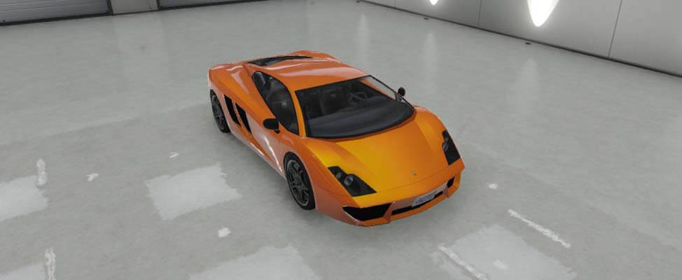

El Vacca es un vehículo deportivo que aparece por primera vez en Grand Theft Auto V. Es Fabricado por Pegassi. Tiene un diseño bastante aerodinámico y con muchos ángulos: en la parte trasera posee un gran difusor de aire, el cual está hecho de fibra de carbono, además de tener una salida de aire de un tamaño considerable y en ella se encuentran 2 pequeños tubos de escape cuadrados.